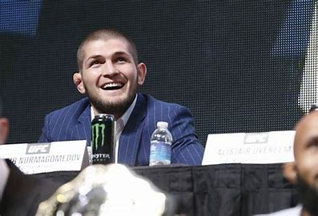

UNDEFEATED UNDISPUTED CHAMPION FIGHTER
Born September 20, 1988 in Makhachkala (Dagestan, Soviet Union), is a Russian mixed martial arts (MMA) practitioner of Dagestan origin. He was a two-time world champion in sambo, black belt in judo and expert in wrestling. He was fighting at the Ultimate Fighting Championship (UFC) in the lightweight category. Undefeated (29 wins without loss) since his professional debut in MMA, he is the UFC lightweight champion of the in the lightweight category. from April 7, 2018 until his retirement and therefore his renunciation of the title october 24 , 2020
THE LEGACY OF THE CHAMPION
September 2008
January 2012
In his UFC debut, on 20 January 2012 at UFC on FX 1, Nurmagomedov defeated Kamal Shalorus via submission in the third round.

July 2012
Nurmagomedov next defeated Gleison Tibau on 7 July 2012 at UFC 148 via unanimous decision. However, 5 out of 6 media outlets scored the fight for Tibau.
Mi-janvier 2018, c'est une quatrième fois que la rencontre entre le combattant russe et Tony Ferguson est planifiée. À l'occasion de ce match envisagé pour l'UFC 223 du 7 avril 2018, l'UFC prévoit de destituer Conor McGregor de son titre alors que ce dernier n'a pas combattu dans l'Octogone depuis plus d'un an, pour introniser le vainqueur champion incontesté des poids légers5. Seulement, la confrontation entre Khabib Nurmagomedov et Tony Ferguson est à nouveau annulée en raison d'une blessure de l'Américain à moins d'une semaine de l'échéance. C'est alors le champion des poids plumes, l'Américain Max Holloway qui est programmé pour le remplacer dans un combat où le titre des poids légers reste en jeu6. Cependant encore, la veille du combat, les autorités médicales excluent Max Holloway du programme à cause d'une perte de poids jugée dangereuse7. C'est donc au pied levé que l'Américain Al Iaquinta, aussi prévu dans le programme de l'UFC 223, récupère la place pour ce combat en tête d'affiche. Pourtant ce dernier ne peut prétendre au titre puisque sa pesée effectuée en vue de son combat contre l'Américain Paul Felder le place quelques dizaines de grammes au-dessus de la limite pour une rencontre avec ceinture en jeu8. Finalement, c'est le Russe qui contrôle et domine le match pour s'imposer par décision unanime (50-43, 50-43, 50-44) et devenir enfin le nouveau champion des poids légers de l'UFC9.
January 2013
Nurmagomedov's next fight was against Thiago Tavares on 19 January 2013 at UFC on FX 7. He won via KO in the first round. After the fight, Tavares tested positive for Drostanolone, an anabolic steroid, and received a 9-month suspension.
April 2014
Nurmagomedov next faced Rafael dos Anjos on 19 April 2014 at UFC on Fox 11. He won the fight via unanimous decision.
2016
Nurmagomedov has trained with SC Bazarganova in Kizilyurt, Dagestan (2012), K-Dojo, AMA Fight Club in Fairfield, New Jersey (2012), Mamishev Fight Team in Saint Petersburg (2012), Fight Spirit Team in Kolpino, St. Petersburg (2013), and KHK MMA Team in Bahrain (2015), which was funded by Bahraini prince Khalid bin Hamad Al Khalifa. In 2016, Nurmagomedov co-founded his own team, Eagles MMA, with support from the Dagestani billionaire Ziyavudin Magomedov. After Magomedov was arrested on charges of embezzlement in 2018, Nurmagomedov used his post-fight speech at UFC 223 to appeal to Russian president Vladimir Putin for Magomedov's release from jail. Nurmagomedov has also hosted a training seminar at the Akhmat MMA fight club that is funded by Head of the Chechen Republic Ramzan Kadyrov, who has received criticism from some quarters for his government's alleged human rights abuses.
March 2017
The bout with Ferguson was scheduled for a third time at UFC 209 on 4 March 2017 for the interim Lightweight Championship. Nurmagomedov, however, fell ill because of a botched weight cut, and the bout was cancelled as a result. z
April 2018
On 3 April 2018, Nurmagomedov and fellow fighter Artem Lobov had an altercation, in which Nurmagomedov and his entourage cornered Lobov and slapped him multiple times. Lobov is known to be close to Conor McGregor, with whom Nurmagomedov had verbal altercations and trash talk exchanges. Two days later, during promotional appearances for UFC 223, McGregor and his entourage were let into the Barclays Center by credentialed members of his promotional team. They confronted Nurmagomedov, who was on a bus leaving the arena with other "red corner" fighters for UFC 223 onboard, including Rose Namajunas, Al Iaquinta, Karolina Kowalkiewicz, Ray Borg, and Michael Chiesa. McGregor ran up alongside the slowly moving bus and then ran past it to grab a metal equipment dolly, which he threw at the bus's window, before trying to throw other objects in the vicinity. Chiesa and Borg were injured by the shattered glass, and sent to hospital. They were soon removed from the card on the advice of the NYSAC and the UFC's medical team.
April 2018
On 6 October 2018, following his victory over Conor McGregor at UFC 229, Nurmagomedov jumped over the octagon fence and charged at McGregor's cornerman, Dillon Danis. Danis had reportedly shouted insults at Nurmagomedov. Soon afterwards, McGregor and Abubakar Nurmagomedov, Khabib's cousin, attempted to exit the octagon, but a scuffle broke out between them after McGregor punched Abubakar, who then punched him back. McGregor was then attacked from behind inside the octagon by two of Nurmagomedov's cornermen, Zubaira Tukhugov and Esed Emiragaev. Tukhugov, a Chechen fighter, was scheduled to fight on 27 October 2018 at UFC Fight Night: Volkan vs. Smith against Artem Lobov, the McGregor team member who was confronted by Nurmagomedov in April 2018. Tukhugov was removed from the card on 17 October.
June 2018
McGregor and others involved initially fled the Barclays Center after the incident. UFC president Dana White said there was a warrant out for McGregor's arrest, and the NYPD said McGregor was a person of interest. White claimed McGregor told him via text message: "This had to be done." White said, "You can imagine he's going to be sued beyond belief," and denied suggestions that the violence was a stunt intended to generate interest in the UFC. McGregor later turned himself in to a police station, where he faced three counts of assault and one count of criminal mischief. He was further charged with menacing and reckless endangerment at his arraignment and released on $50,000 bail until 14 June 2018. Under the bail conditions set by the judge, McGregor was allowed to travel without restriction. McGregor later pleaded no contest to a count of disorderly conduct and was ordered to perform five days of community service and attend anger management classes.
August 2018
On Friday, 3 August 2018, the UFC announced that Nurmagomedov would make his first defence of his lightweight title against Conor McGregor at UFC 229 on 6 October in Las Vegas. In the fight, Nurmagomedov won the first two rounds, but lost to McGregor in the third round. It was the first time Nurmagomedov lost a round in his UFC career. He managed to defeat McGregor in the fourth round via submission. After the contest, Nurmagomedov scaled the Octagon and tried to attack McGregor's teammate Dillon Danis, which resulted in a brawl between the two teams. The event drew 2.4 million pay-per-view buys, the most ever for an MMA event.
October 2018
In October 2018, Nurmagomedov was made an "Honorary Citizen of Grozny" by the mayor of Grozny Ibrahim Zakriev after his victory against McGregor at UFC 229. He was also presented with a Mercedes car by Chechnya's head Ramzan Kadyrov, funded from the Akhmad Kadyrov Foundation, and his father Abdulmanap was awarded the title of "Honoured Worker of Physical Culture of the Chechen Republic" by Kadyrov.
October 2018
The NSAC filed a formal complaint against both Nurmagomedov and McGregor, and on 24 October, the NSAC voted to approve a motion to release half of Nurmagomedov's $2 million fight payout immediately. Both Nurmagomedov and McGregor received indefinite bans until an official hearing would determine the disciplinary outcome of the post-fight brawl. On 29 January 2019, the NSAC announced a nine-month suspension for Nurmagomedov (retroactive to 6 October 2018) and a $500,000 fine. He was eligible to compete again on 6 July 2019. McGregor also received a six-month suspension and $50,000 fine, while Abubakar Nurmagomedov and Zubaira Tukhugov each received 12-month suspensions and fines of $25,000. Khabib Nurmagomedov complained about the NSAC's decisions and stated he no longer wished to compete in the state of Nevada.
June 2019
In June 2019, Nurmagomedov signed a new multi-fight contract with the UFC. In the first fight of his new deal, Nurmagomedov made the second defence of his title against interim lightweight champion Dustin Poirier on 7 September 2019 in the main event at UFC 242. He won the fight via a rear-naked choke submission in the third round. The win unified both titles and earned Nurmagomedov his second Performance of the Night bonus award. He and Poirier swapped shirts after the fight as a show of respect. In his post-fight interview Nurmagomedov said that he would be selling the shirt Poirier gave him and donating the proceeds to Poirier's charity. The shirt sold for $100,000 and the donation was matched by UFC president Dana White.
December 2019
On 5 December 2019, Head of the Republic of Dagestan Vladimir Vasilyev awarded Nurmagomedov and his father, Abdulmanap the Order For Services to the Republic of Dagestan for their "significant contributions to sports in Dagestan".
April 2020
Nurmagomedov was scheduled to defend his title against Tony Ferguson on 18 April 2020 at UFC 249. This was the fifth time that a fight between the pair had been scheduled, and both fighters were on 12-fight win streaks in the UFC. However, Nurmagomedov was unable to leave Russia because of restricted air travel due to the COVID-19 pandemic, and so was removed from the card. Ferguson instead faced top contender Justin Gaethje for the interim UFC Lightweight Championship at UFC 249, which was postponed to 9 May. Gaethje won the fight by fifth-round TKO, thus ending Ferguson's win streak and securing himself a shot at the undisputed title against Nurmagomedov.
May 2020
In May 2020, Nurmagomedov's father and long-time trainer Abdulmanap was placed in a medically induced coma after contracting COVID-19 following a heart surgery. He died on 3 July 2020 at a clinic in Moscow, at the age of 57.
October 2020
Nurmagomedov faced Gaethje in a unification bout on 24 October 2020 in the main event at UFC 254. Nurmagomedov won the fight via technical submission with a triangle choke in the second round to defend and re-unify the UFC Lightweight Championship. In his post-fight interview, Nurmagomedov announced his retirement from mixed martial arts. He explained that he had promised his mother that he would not continue to fight without his late father, "No way I'm going to come here without my father. It was first time after what happened with my father, when UFC called me about Justin, I talk with my mother three days. She doesn't want me to go fight without my father but I promised her it was going to be my last fight. If I give my word, I have to follow this. It was my last fight here." This win earned him the Performance of the Night award. Daniel Cormier claimed in an episode of DC & Helwani, after the fight, that Khabib had said he chose the triangle choke instead of an arm bar in order to prevent Gaethje from being injured.
August 2021
In August 2021, Nurmagomedov attracted controversy after stating at an EFC press conference in Moscow that he saw no point to ring girls and their function of parading Octagon cards around before the start of each round. According to him, it is a pointless exercise that makes him "uncomfortable". He was quoted as saying "Look, I don’t want to offend anyone. Ring girls are the most useless people in martial arts. What is their function? You can show that it is the second round on the screen. Do they develop a sport? Or they help people to see that it is the second round now? What are they doing? Tell me, please."
Late 2021
In late 2011, Nurmagomedov signed a six-fight deal to compete in the UFC's lightweight division.
CLICK ON THE LINK FOR RESOURCE